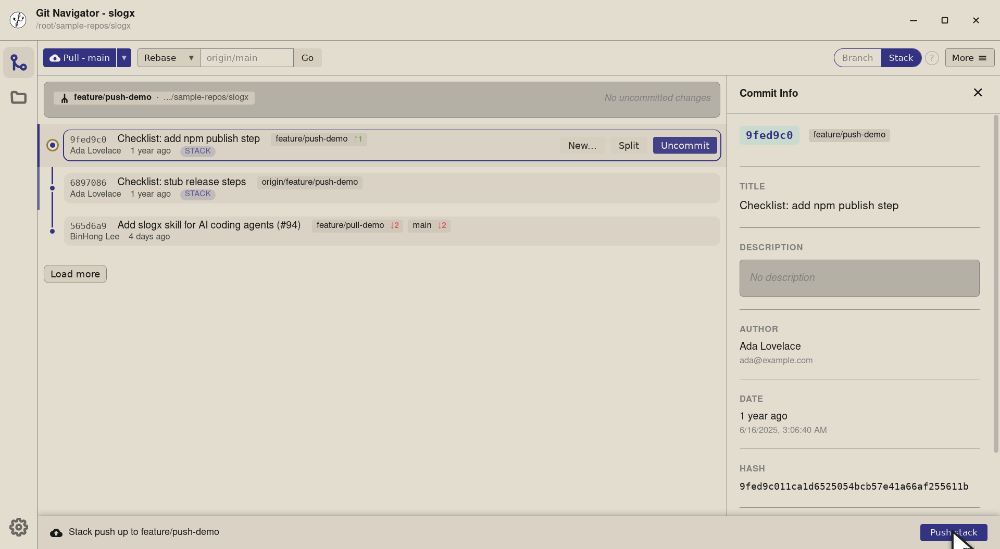
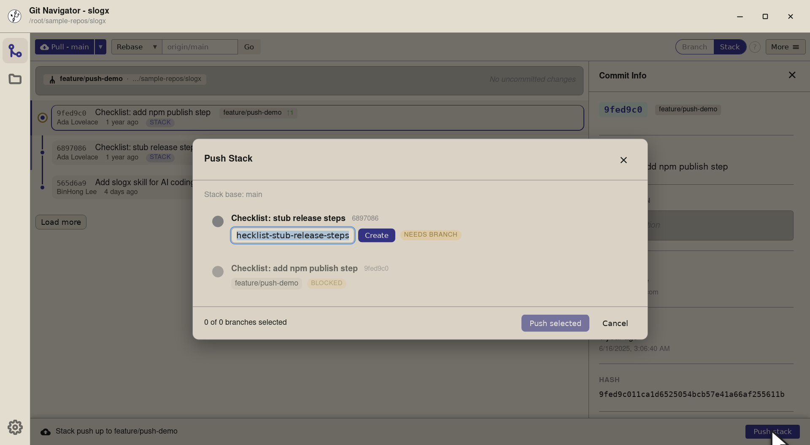
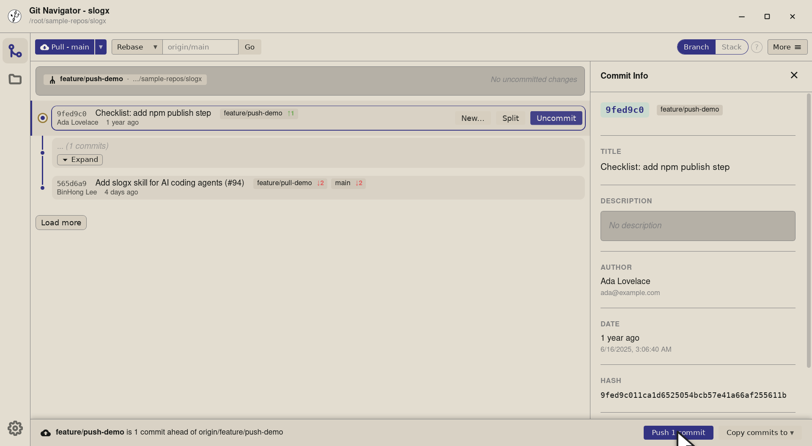
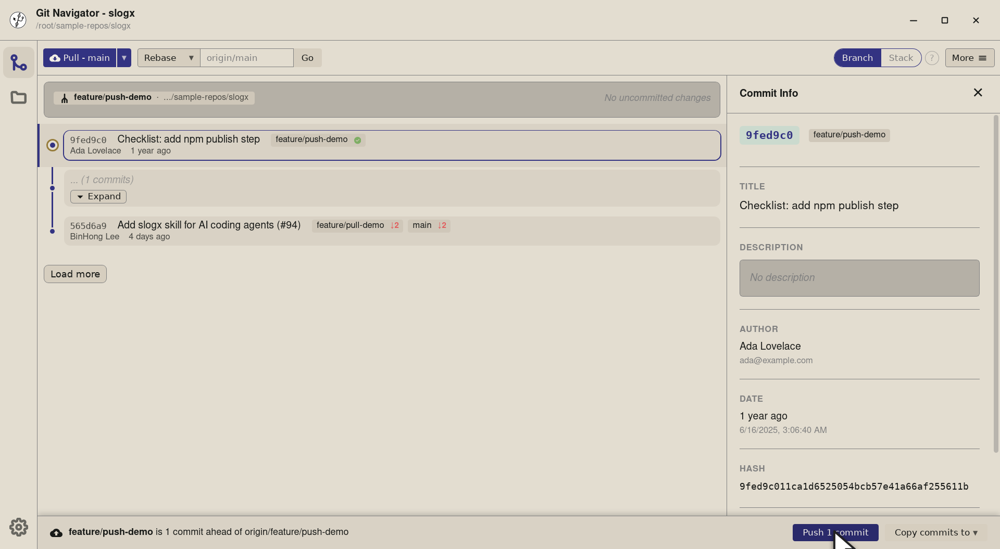

Push from the graph — stack or branch, your choice
Git Navigator surfaces a push bar at the top of the graph the moment your branch is ahead of its remote. In stack mode you push the chain ending at the commit you selected; in branch mode you push the whole branch as a unit. Same fixture, same remote, different intent — flip the toggle to compare.
Push, in two shapes
Push bar that knows what you mean
The bar reads your selection: in stack mode it offers Push stack ending at the commit you picked; in branch mode it offers Push N commits for the whole branch. No flag-juggling.
Stack mode is partial-push by design
In stack mode the push bar pushes only the chain up to your selected commit — so an in-progress branch can ship its first review-ready commits while you keep iterating on the rest.
Branch mode is single-button ship
In branch mode the graph collapses intermediate commits into placeholders and the push bar pushes the branch tip as one button. The fastest path when the whole branch is ready.
New-branch pushes set upstream automatically
First push of a branch with no remote counterpart wires the upstream as part of the push — no separate git push -u. Subsequent pushes stay scoped to that upstream.
Walkthrough
-
Step 1. A branch that's ahead of its remote gets a push bar pinned to the bottom of the graph. In stack mode it offers a single Push stack button, anchored to the commit you have selected — pick the tip and the bar pushes the whole stack; pick an earlier commit and it pushes the chain ending there. -

Step 2. The bar title — Stack push up to feature/push-demo — names what the click would push. Selecting an earlier commit in the ahead range re-labels it to the chosen commit's hash, so the partial-stack case stays explicit. -

Step 3. Click and the Push Stack dialog opens. Stack mode treats each commit as a candidate branch — name the still-anonymous commits and hit Create per row, then Push selected sends each one to origin/<branch>. Perfect for a one-commit-per-PR workflow.
-
Step 1. In branch mode the graph collapses intermediate commits into placeholders — each branch is a single row plus its tip. The push bar follows the same shape but talks about the branch, not a chain: the button counts how many commits the push will carry. -

Step 2. The button reads Push 1 commit — everything feature/push-demohas ahead oforigin/feature/push-demo. There's no partial-stack option here; branch mode is "ship the whole branch" by design. -

Step 3. Same git pushunder the hood. New-branch pushes also wire the upstream (the equivalent ofgit push -u), so subsequent pushes track the remote without a re-set.
Pushing in Git Navigator
- Make commits as usual. Stage and commit from the uncommitted-changes panel, or rebase your way to a clean history. Once the branch is ahead of its remote, the push bar appears above the graph automatically.
- Pick the mode that matches your intent. Stack mode pushes the chain ending at the selected commit (great for review-ready prefixes of an in-flight branch). Branch mode pushes the whole branch (the fastest path when everything is ready).
- Click push. A single button. New-branch pushes also set the upstream, so subsequent pushes are friction-free.
- Watch the bar update. After the push, Git Navigator re-reads remote state and the bar either disappears (nothing left ahead) or updates its count (still more to go).
Frequently asked questions
When does the push bar appear?
Whenever the current branch is ahead of its tracked remote, or has no remote counterpart yet (a "new branch" push). The bar names the local branch and updates as you select different commits in the ahead range.
What's the difference between stack mode and branch mode?
Stack mode keeps every commit on its own row in the graph and the push bar pushes the chain ending at the commit you have selected — perfect for shipping a review-ready prefix while you keep iterating on the rest. Branch mode collapses intermediate commits into placeholders and the push bar pushes the whole branch in one button. Toggle between them with the Branch / Stack switch in the top-right.
Does Git Navigator handle the upstream for me?
Yes. The first push of a branch that has no remote counterpart wires the upstream as part of the push (the equivalent of git push -u). Subsequent pushes stay scoped to that upstream.
What happens if the remote rejects my push?
Git Navigator surfaces the error and offers two safe recovery paths: pull + push (rebase + retry) or force-with-lease push (only if you confirm). It will not run a blind --force.
Can I push only some commits without re-arranging the graph?
Yes — that's the point of stack mode. Select the commit you want to push up to, click Push stack, and Git Navigator pushes everything from the remote tip up to (and including) that commit. The rest of the branch stays local.